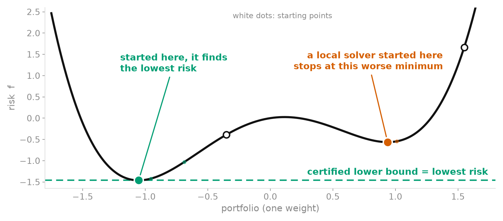

sos-portfolio
Is this really the safest portfolio? Certifying a risk measure with sums of squares
Posted · updated
- The questionvariance does not see crashes
- The modela risk that is a polynomial of degree four
- Why it is hardseveral valleys, and a solver that stops in the nearest one
- The certificatea lower bound from sums of squares, in plain words
- Experiment Ahow often does local search miss the best portfolio?
- Experiment Bdoes a robust formulation protect against estimation error?
- Experiment Cdoes the certified portfolio help on real stocks?
- What this teachesand what it does not show
- Referencespaper and code
1. The question
You split your savings between several stocks. The weights \(x = (x_1, \dots, x_n)\) say what share goes to each one. How risky is the result? The textbook answer is the variance of the portfolio's return, \(x^\top \Sigma x\), where \(\Sigma\) is the covariance matrix of the stock returns. Minimising it is easy: the problem is convex, so any solver finds its single best answer.
But variance only measures how spread out the returns are. It does not see crashes. Two portfolios can have the same variance and very different worst days. Real stock returns have fat tails: on the 37 US stocks used below, the median kurtosis is 16, where a normal law gives 3, and the skewness is negative for 31 of them, meaning that big losses are more likely than big gains.
So one adds the next two moments of the return: the skewness (asymmetry) and the kurtosis (weight of the tails). The question of this project is: once the risk includes them, can we know that we found the best portfolio, and does the best portfolio pay off?
2. The model
The moment of order \(k\) of the portfolio return is a polynomial of degree \(k\) in the weights. Variance has degree 2, skewness degree 3, kurtosis degree 4. A risk that penalises variance and kurtosis and rewards skewness is therefore a polynomial of degree four. The synthetic risk of the paper is
\[ f(x) = x^\top \Sigma x + \sum_i \eta_i x_i^3 + \sum_{i,j} \kappa_{ij}\, x_i^2 x_j^2 + c(x), \]
minimised over long-only portfolios (no short selling) whose total weight is between 0.95 and 1.
| Term | Role | Degree |
|---|---|---|
| \(x^\top \Sigma x\) | variance | 2 |
| \(\sum_i \eta_i x_i^3\) | skewness-like | 3 |
| \(\sum_{i,j} \kappa_{ij}\, x_i^2 x_j^2\) | kurtosis-like, the term that makes the problem hard | 4 |
| \(c(x)\) | a stylised penalty on concentrated positions | 4 |
The \(\eta_i\) and \(\kappa_{ij}\) are coefficients of the model. They play the part of skewness and kurtosis, but they are not the real co-moments of a portfolio. The markets of the first experiments are synthetic: I draw the coefficients at random, in three regimes (default, mixed, stress) that differ by the size of the skewness and concentration coefficients.
3. Why it is hard
A polynomial of degree four is in general not convex: it can have several valleys. A local solver slides downhill from where it starts and stops at the bottom of the nearest valley, which may not be the deepest one. The figure shows it with a single weight. With \(n\) assets the same picture lives in \(n\) dimensions, and nobody can look at it.

4. The certificate
The idea, in plain words: instead of searching for the lowest point, find a number below which the risk cannot go. Call it \(\lambda\): for every admissible portfolio, \(f(x) \ge \lambda\). Then any portfolio \(\hat x\) whose risk is close to \(\lambda\) is nearly the best one:
\[ \lambda \;\le\; f^\star \;\le\; f(\hat x), \]
where \(f^\star\) is the lowest possible risk. If the two ends are close, \(\hat x\) is certified as the global minimiser, up to the accuracy of the solver.
How to get such a \(\lambda\)? The Lasserre hierarchy (2001) turns the polynomial problem into a semidefinite program (SDP), which is convex and can be solved. Each monomial, like \(x_i^2 x_j^2\), is replaced by a new variable, and one requires that a large matrix built from these variables, the moment matrix, be positive semidefinite. This relaxes the problem, so its optimum \(\lambda_{\mathrm{lb}}\) can only be below \(f^\star\). Seen from the other side, it is the largest constant \(c\) for which \(f - c\) can be proved nonnegative as a sum of squares on the admissible set, hence the name of the project. I use the smallest order that works for degree four (order 2). In the paper, a point \(\hat x\) is certified when \(f(\hat x) - \lambda_{\mathrm{lb}} \le \max(10^{-6},\, 10^{-4} |\lambda_{\mathrm{lb}}|)\). The bound is only as accurate as the SDP solver (CLARABEL, through CVXPY), so "certified" means certified to solver accuracy.
The price is size. The dense relaxation is measured up to 15 assets, where one solve takes 193 s and 4.7 GB, against 0.71 s for the sparse one. The sparse version (Waki et al., 2006) uses the fact that assets interact within groups, here sectors: one smaller matrix per group instead of one huge matrix. It is valid, but its bound is weaker than the dense one at the same order.
One thing to keep in mind: three things can go wrong between a model and a good portfolio. The model may not be the investor's true objective (model error), its coefficients are estimated from a finite window (estimation error), and the solver may return a point above the minimum (optimisation error). The certificate only controls the third. Experiment A looks at it on synthetic polynomials, Experiment B at the second by drawing errors on the coefficients, and Experiment C mixes all three on real data. Each experiment has a question and an expectation that I wrote down before running it.
5. Experiment A: how often does local search miss the best portfolio?
I generated 1760 random polynomials of the form above, with 2 to 50 assets, in the three regimes. On each one, a standard local solver (SLSQP) is started from random portfolios and the best result is kept. It succeeds if it reaches the certified value, up to a small tolerance. Expected: local search finds the global minimum in the default regime, and fails in the stress regime.
How to read the figure. One panel per regime, the default one on the left. One curve per number of assets \(n\). Horizontal axis: the number \(K\) of local starts, on a log scale. Vertical axis: the share of instances where the best of the \(K\) starts reaches the certified value. A curve at 1 means "always", and a curve that stays low means that even many starts do not suffice.

I was wrong for the default regime. One start misses the global minimum with probability 0.30 at 15 assets and 0.83 at 50 assets (read: of 100 random starts, about 83 end in a worse point). With one start the best portfolio is missed on 86% of the instances at 50 assets; with the best of 100 starts, still on 16%. The share of instances with several local minima grows with \(n\): 0% at 4 assets, 48% at 15, 98% at 50.
The relaxation certifies all but 29 of the 1760 instances, but unevenly: only 74% of the default-regime instances at 50 assets. And it is not cheap there: the median solve takes 80 s, against 33 s for 100 local runs. The 16% above is slightly too low, because on an instance that is not certified the reference is the best of the 100 runs, which cannot fail by construction. Among the certified instances the rate is 21.6%.
Caveats: the comparator is SLSQP from random starts, not a global solver; the polynomials are synthetic; I did not test why local minima multiply with \(n\); the times come from six concurrent workers and are indicative only.
6. Experiment B: does a robust formulation protect against estimation error?
In practice the coefficients \(\kappa\) are estimated, with error. Here the true coefficients are known, and I add noise of relative size \(\rho\) (\(\rho = 0.05\) is an error of 5% of their norm, \(\rho = 0.5\) of 50%), with 200 draws each, on four synthetic markets of 6 and 10 assets. The portfolio is then chosen in three ways:
- the nominal problem, which takes the estimate at face value;
- a robust formulation, which minimises the worst case over a ball of radius \(\delta\) around the estimate (it adds a penalty proportional to \(\delta\));
- shrinkage, which pulls the estimate toward a simple target, with an intensity \(s\) between 0 and 1: \((1 - s)\hat\kappa + s\,\kappa_{\mathrm{target}}\).
The score is the regret: the extra risk, in the units of \(f\), that the chosen portfolio carries when judged with the true coefficients, compared with the best one. It is never negative, and smaller is better. Expected: the ball lowers the regret when \(\rho\) is large and costs little when \(\rho\) is small.
How to read the figure. One panel per noise level \(\rho\), from 0.05 to 0.5. Horizontal axis: the radius \(\delta\), on a log scale. Vertical axis: the mean regret over the 200 draws, on a log scale. Blue: the robust formulation. Diamonds: an automatic rule that sets \(\delta\) from a bootstrap on 20 synthetic observations. Dashed line: the nominal problem (\(\delta = 0\)). Dotted line: the best shrinkage. A blue curve below the dashed line means that robustness helps.

On the 10-asset mixed market the ball is worse than nominal for \(\rho \le 0.2\), and the loss grows with \(\delta\). At \(\rho = 0.5\), small radii lower the regret by 2 to 5%, and larger ones are worse again. At the same noise level, shrinkage with \(s = 0.75\) brings the regret to 0.21 of the nominal value; at \(\rho = 0.05\) the nominal problem is the best. The automatic rule never beats nominal.
Caveats: the noise is drawn, not real estimation error. Shrinkage probably does well because my synthetic coefficients come from narrow ranges, so the target is close to the truth; I did not test this. Other uncertainty models are not covered.
7. Experiment C: does the certified portfolio help on real stocks?
The data are daily prices of 37 large US stocks in 9 sectors, 2009 to 2025. The list is today's large caps, so stocks that fell out of the index are missing. This survivorship bias flatters every strategy, so absolute returns should not be taken at face value. It is shared by all strategies, so it matters less for the comparisons between them, but I could not measure its effect.
The test is walk-forward: on the first trading day of each month from 2015 to 2025, each strategy estimates its inputs on the previous 756 trading days (about three years) and sets long-only weights, capped at 25% per stock for the optimised strategies. Costs of 5 basis points (0.05%) per unit traded are deducted. Two universes: U10, with 10 stocks and the full model, and U37, with all 37 stocks and a sector model that keeps only the co-moments between stocks of the same sector. The polynomial strategies minimise a risk that mixes variance, skewness and kurtosis, with a weight \(w_4\) on the kurtosis term (\(w_4 = 1\) is the reference). They are compared with equal weights, minimum variance (Ledoit and Wolf), hierarchical risk parity, minimum CVaR and others. Expected: the third and fourth co-moments are noisy on 756 days, so the global and the local minimiser should coincide most of the time, and neither should be distinguishable from simple baselines.
How to read the figure. Left: U10. Right: U37. Horizontal axis: date. Vertical axis: the cumulative sum of the daily net returns after costs (not compounded: 1.0 means a summed return of 100%). One curve per strategy; the polynomial strategies are minimised locally or with the certificate (SOS).

On U10 the certified minimiser equals the local one on every date. On U37 the local solver is off by more than 0.01% (in relative terms) on 14%, 6% and 4% of the dates, for \(w_4 = 0, 1, 3\). Every solve with the certificate does certify its point. Out of sample the picture is flat. Net returns run from 8.2% to 14.1% a year across the 14 strategies of U37, and equal weights earn 12.8%. To compare two strategies I use a 95% interval from a block bootstrap: if it contains zero, the data do not separate them. All 13 net-return intervals on U37 contain zero.
On risk, the picture depends on the baseline. With \(w_4 = 1\) on U10, volatility is 15.4% against 16.4% for equal weights, which is what any risk-minimising rule does. But the certified minimiser is not better than minimum variance or minimum CVaR on volatility and CVaR (the mean loss on the worst 5% of days). The price of sparsity is large in model terms: at the sector solution the full-model objective is 0.42 on average, against 0.22 at the full-model local solution, and it is worse on all dates.
Caveats: the objective has no return term; one period, one universe, no correction for multiple testing, survivorship bias. That estimation error hides the benefit is a hypothesis, not a measurement.
8. What this teaches
On synthetic polynomials, local search fails often enough for a certificate to be worth having, especially beyond ten assets. The relaxation delivers it in most cases, at a cost that exceeds 100 local runs at 50 assets. On real data, the certified minimiser is better at the thing it optimises, and the gain does not transfer: it changes the allocation on few dates and does not improve on the risk-based baselines. The most plausible reason is estimation error in the third and fourth moments, which I did not separate from model error. A robust formulation is not a free lunch either: in my tests, simple shrinkage did better.
What this does not show: that a certificate is useless for other objectives, that the ball formulation fails for other uncertainty models or with real estimation error, or anything about markets beyond 37 fixed US stocks over one period. Everything on synthetic data describes my family of polynomials only.
The first version of the paper contained errors (a budget constraint that decoupled the groups, a size-reduction ratio that mixed two metrics, an unsupported timing, a benchmark called non-convex that is convex). I corrected them before running the experiments above; the paper lists them in an appendix.
The idea, the model, and the link between higher-moment portfolio risk and polynomial optimization are mine. The paper is essentially handwritten; AI was used for the layout and for a final audit of the paper. The code was written with AI, and the search for results was AI-assisted. This post is handwritten.
References
- J. B. Lasserre. Global optimization with polynomials and the problem of moments. SIAM Journal on Optimization, 2001.
- H. Waki, S. Kim, M. Kojima and M. Muramatsu. Sums of squares and semidefinite program relaxations for polynomial optimization problems with structured sparsity. SIAM Journal on Optimization, 2006.
- D. Henrion and J. B. Lasserre. Detecting global optimality and extracting solutions in GloptiPoly. 2005.
- V. DeMiguel, L. Garlappi and R. Uppal. Optimal versus naive diversification: how inefficient is the 1/N portfolio strategy? Review of Financial Studies, 2009.
- O. Ledoit and M. Wolf. A well-conditioned estimator for large-dimensional covariance matrices. Journal of Multivariate Analysis, 2004.
- M. López de Prado. Building diversified portfolios that outperform out of sample. Journal of Portfolio Management, 2016.
- R. T. Rockafellar and S. Uryasev. Optimization of conditional value-at-risk. Journal of Risk, 2000.